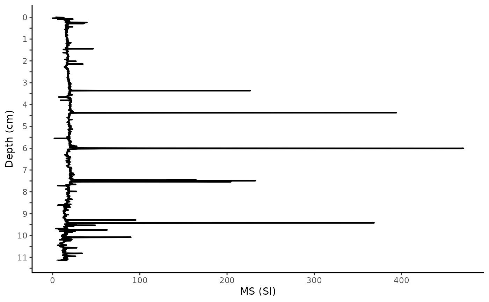

stamdardized_data.Rmd
library(paleosedr)
library(readxl)
library(purrr)
library(lipdR)
library(geoChronR)
#> Welcome to geoChronR version 1.1.12!
#>
#>
#> Attaching package: 'geoChronR'
#> The following objects are masked from 'package:lipdR':
#>
#> createTSid, pullTsVariable
library(ggplot2)Table of Contents 1. Standardized Data 2. LIPD Playground 3. Age Modeling 4. Plotting Sed. Rate and MAR 5. Plotting Multi-Proxy Records 6. Particle Size Heatmap
*Before starting this section, go to the below link and save this file: https://docs.google.com/spreadsheets/d/1KlnINNOccssJGl5mrr1PWqobp_kq5WvV/edit?usp=drive_link&ouid=105286369374985387783&rtpof=true&sd=true
First things first! Ensure that a composite depth profile has been developed if the sediment core has multiple sections. This is critical for all of the following steps. Composites are created by matching stratigraphy at different points in the core to build a complete top-to-bottom core depth profile, making multiple cores appear as one.
Once a composite depth is created and you start getting different datasets, it is essential to have individual Excel files. These files will house your data as you produce proxy records of Biogenic Silica (BSi), Hyperspectral (RABD data), X-ray fluorescence (XRF), Loss-on-Ignition (LOI), and more.
This package is set up for the following proxy records: Sedimentation Rate, Bulk Density (BD), Mass Accumulation Rate (MAR), Grey Scale, RABD datasets, LOI, BSi, Magnetic Susceptibility (MS), XRF, and particle size data.
For practice, load in the data set for Eklutna Lake from Southeastern Alaska using our first function, “load_paleo_data”
# Replace 'path/to/your/excel_file.xlsx' with the actual file path
excel_file_path <- system.file("extdata", "2024.03.24_eklutna_compilation.xlsx", package = "paleosedr", mustWork = TRUE)
# Call the load_paleo_data function to read in the Excel file
all_data <- load_paleo_data(excel_file_path)
#> New names:
#> New names:
#> New names:
#> New names:
#> New names:
#> New names:
#> New names:
#> New names:
#> New names:
#> New names:
#> New names:
#> New names:
#> New names:
#> • `drive` -> `drive...2`
#> • `` -> `...4`
#> • `drive` -> `drive...5`Great! You now have a huge dataset and multiple proxy records and need to visualize and interpret them. First, download this data sheet from the top of this page. Rename the Excel sheet to my (year) mm (month) dd (day), lake name, proxy dataset (yyyy.mm.dd_lakename_proxydataset). This will be where you house all your records and keep them standardized. You will not be able to use this package without using this organization method.
You have 13 different “sheets” or “tabs” in this Excel sheet. Each has been pre-named to the specific dataset it will hold. EX.) BSi data will go in “bsi”, bulk density data will go in “bd.” Each sheet has the first two columns named “drive_code” and “core_depth.” This will often be how you collect your data, and you will have to convert it to composite depth.
Let’s return to our variable “Eklutna” that we just loaded. This is a large 9,600-year record with many different proxy records.
If you want to plot up some of the trends by depth, you can pull the Excel sheet from your Eklutna variable by doing the following:
eklutna_ms <- all_data[["ms"]]Once the individual sheet is loaded as a variable”Magnetic Susceptibility (MS),” you can use ggplot2 to create a graphic. This is a normal plot I use. You will notice that you can adjust the ages and depths depending on your dataset. Eklutna’s record only goes to 11.15 meters so I adjust my labels accordingly.
ms_plot_depth <- ggplot(eklutna_ms, aes(x = composite_cm, y = ms_si)) +
geom_line(color = "black", size = 0.75) +
scale_x_reverse(
breaks = c(1150,1100,1050,1000, 950, 900, 850, 800, 750, 700, 650, 600, 550, 500, 450, 400, 350, 300, 250, 200, 150, 100, 50, 0),
labels = c("","11","", "10", "", "9", "", "8", "", "7", "", "6", "", "5", "", "4", "", "3", "", "2", "", "1", "", "0")) +
coord_flip() +
theme_classic() +
labs(x = "Depth (cm)", y = "MS (SI)")
#> Warning: Using `size` aesthetic for lines was deprecated in ggplot2 3.4.0.
#> ℹ Please use `linewidth` instead.
#> This warning is displayed once every 8 hours.
#> Call `lifecycle::last_lifecycle_warnings()` to see where this warning was
#> generated.
print(ms_plot_depth)
If you have multiple of these depth plots, you can arrange them with the grid. arrange function that we will go over in Section 4. Plotting Multi-Proxy Records.